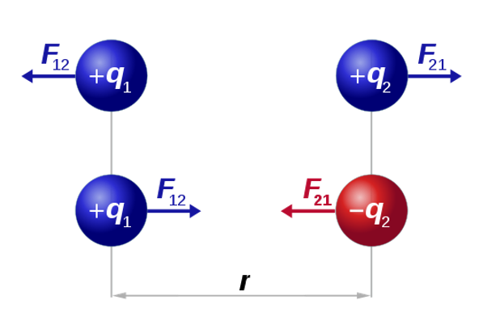
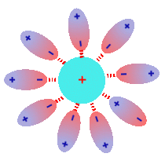
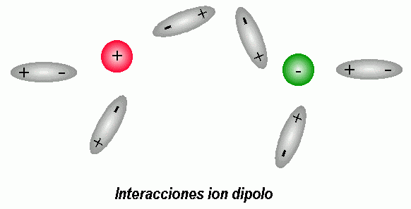
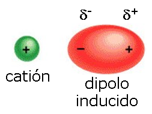
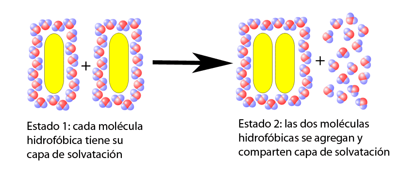
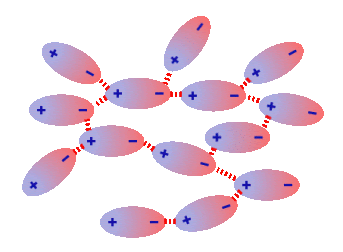
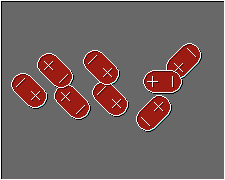
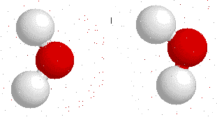
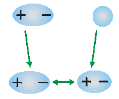
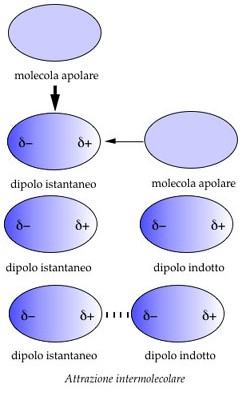

En una molécula, los átomos están unidos por medio de fuerzas intramoleculares; dichas fuerzas se deben romper para que ocurra un cambio químico, por ello, estas determinan las propiedades químicas de las distintas sustancias.
Por otro lado existen fuerzas intermoleculares que actúan sobre las diversas moléculas e iones, las cuales hacen que estos se repelan o se atraigan, por lo tanto, estas fuerzas determinan las propiedades físicas de las sustancias, por ejemplo, el punto de fusión y de ebullición, el estado de agregación, la densidad, la solubilidad, entre otras… Generalmente las fuerzas intermoleculares son débiles, pero al ser en gran cantidad es importante su contribución.En una molécula, los átomos están unidos por medio de fuerzas intramoleculares; dichas fuerzas se deben romper para que ocurra un cambio químico, por ello, estas determinan las propiedades químicas de las distintas sustancias.
Ocurre entre átomos cargados eléctricamente (catión si la carga es positiva (+), anión si es negativa(-)), los iones con cargas iguales se repelen y con cargas distintas se atraen, esto ultimo según la regla fundamental. Llamamos “puente salino” a las moléculas que presentan iones en su constitución atómica.Son fuerzas de atracción entre un ion y una molécula polar. El dipolo, entonces, se une al ion a por medio de su extremo con carga contraria, con una intensidad proporcional a la carga del ion completo.En la interacción ión-dipolo, el catión es atraído electrostáticamente por el dipolo negativo, mientras que el anión es atraído por el dipolo positivo. Por ejemplo, el NaCl cuando es disuelto en H2O ya que existe una atracción entre los iones Na+ y Cl- y los polos con carga opuesta de la molécula de H2O. En la molécula de agua (H2O), el átomo de oxígeno(O) tiene una mayor electronegatividad que la del hidrógeno, por ello existe un dipolo negativo en torno a O, y un dipolo positivo en torno al átomo de H.
Sucede entre un ion y una molécula apolar; en este caso una molécula apolar es inducida por el campo electrostático del ion, adquiriendo polaridad instantánea, pero de una baja intensidad. Cuando el ion se aproxima provoca una distorsión en la nube electrónica de la molécula apolar convirtiéndose esta en una molécula polar.
Una sustancia hidrofóbica es aquella que nos es miscible en agua. Este efecto hidrófobo sucede cuando una molécula no tiene la capacidad de interaccionar con las moléculas de agua ni por interacciones ión-dipolo ni a través puentes de hidrógeno. Por lo tanto las fuerzas hidrófobas son aquellas fuerzas de repulsión que presentan algunas moléculas (mayormente lípidos) ante el agua.
Cuando las moléculas hidrofóbicas están en un medio acuoso tienden a asociarse para así minimizar el número de moléculas de agua que puedan estar en contacto con ellas.
Cuando las moléculas se encentran a una distancia moderada estas se atraen entre sí, pero cuando las nubes electrónicas de las mismas empiezan a solaparse, estas se alejan o repelen con fuerza.
Las fuerzas de van der Waals abarcan a las fuerzas de atracción existentes entre las  moléculas. Esta atracción débil se establece entre moléculas eléctricamente neutras ya sea polar o apolar, pero a pesar de que son fuerzas débiles son muchas y cumplen un papel importante en muchos procesos biológicos. Gracias a estas fuerzas se puede explicar la adhesión, la tensión superficial, la viscosidad y otras propiedades de compuestos químicos orgánicos.
Son aquellas atracciones que ocurren entre moléculas polares, cuando estas forman dipolos sus extremos con cargas opuestas se atraen con las moléculas vecinas. Esta fuerza de atracción es más fuerte cuando es mayor la diferencia de electronegatividades entre los átomos enlazados.
Los puentes de hidrógeno son una atracción dipolo-dipolo especial, ya que es producida cuando un átomo de hidrógeno está unido covalentemente a un elemento o muy electronegativo o muy pequeño capaz de aproximarse al núcleo del hidrógeno, dichas condiciones se cumplen para los átomos de F, O y N.  Los enlaces formados con el hidrogeno son muy polares y el átomo de hidrogeno es un centro con cargas positivas el cual atrae los electrones sin compartir de los átomos electronegativos de otras sustancias. Este es un enlace débil pero muy abundante.
La atracción que ocurre entre una molécula apolar y una molécula polar. La carga de la molécula polar causa una distorsión en la nube electrónica de la molécula apolar convirtiéndola en dipolo, y allí sucede la atracción entre ellas.
Gracias a esa interacción, algunos gases apolares tales como el O2, el N2 o el CO2 pueden ser disueltos en agua.
Estas son fuerzas débiles que se establecen mayormente entre moléculas apolares, aunque también en moléculas polares. Suceden gracias a las irregularidades producidas en las nubes electrónicas de los átomos cuando estos se aproximan mutuamente. Un dipolo instantáneo origina una formación de un dipolo inducido en la molécula vecina formando una débil fuerza de atracción entre las mismas.
Como dijimos anteriormente las fuerzas intermoleculares son las que determinan las propiedades físicas de los compuestos y sustancias. Puesto que las fuerzas intermoleculares tienen lugar entre millones y millones de moléculas , las mismas ayudan a explicar cualitativamente como difieren las propiedades físicas de distintas sustancias, tales como:Estado de agregación: estados de la materia (sólido, líquido y gaseoso).
Punto de fusión y punto de ebullición: El punto de fusión, es la temperatura a la que debe llega una sustancia para pasar de estado solido a líquido, mientras que el punto de ebullición es la temperatura a la que debe llegar una sustancia para pasar de estado liquido a gaseoso.
Solubilidad: capacidad de un cuerpo o sustancia de disolverse al ser mezclado con algún liquido. Entre otras propiedades físicas...Copyrigth 2020 mandanos un mensaje vía email a info@website.com |